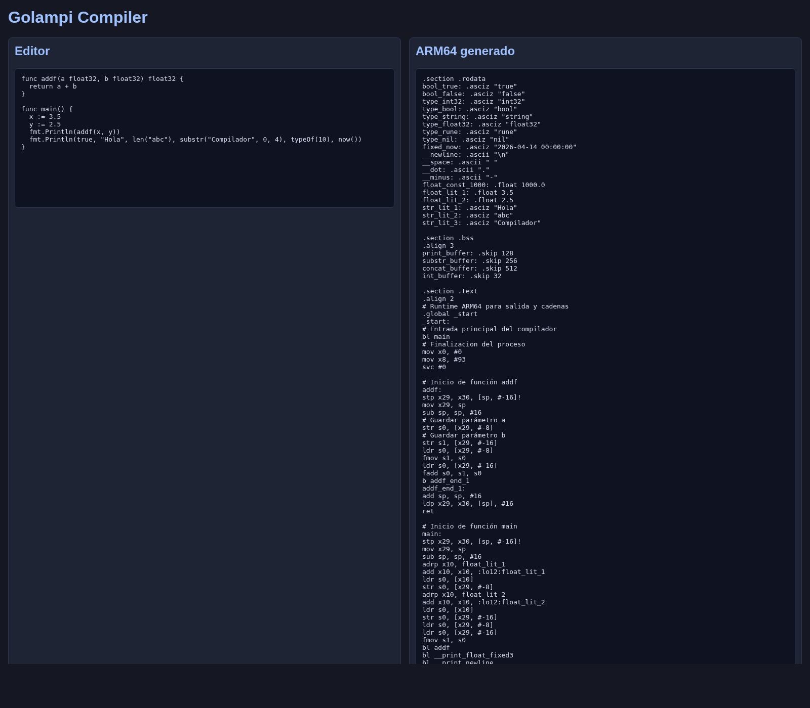
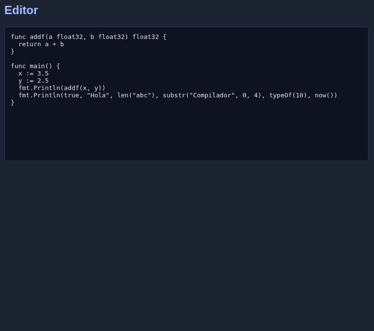
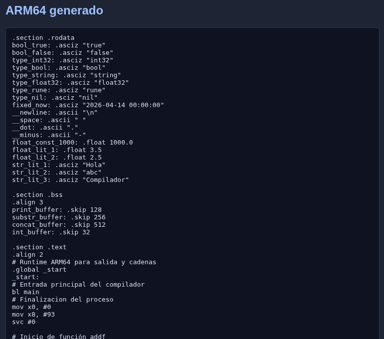

Manual de Usuario - Golampi Compiler
1. ¿Qué es este sistema?
Golampi Compiler es una aplicación web que permite escribir código Golampi, compilarlo,
generar ensamblador ARM64, ejecutarlo con QEMU y visualizar errores, tabla de símbolos
y salida real del programa.
2. Requisitos
- PHP 8 o superior.
- Navegador web moderno.
- Para ejecución ARM64 real, el proyecto ya incluye un toolchain local en
Proyecto2/toolchain/.
3. Cómo iniciar el sistema
- Abrir una terminal en la raíz del repositorio.
- Ejecutar:
php -S 0.0.0.0:8000
- Abrir en el navegador:
http://localhost:8000/Proyecto2/frontend/index.html
4. Cómo usar la GUI
| Control | Uso |
|---|
| Nuevo | Limpia editor y paneles. |
| Cargar archivo | Permite seleccionar un archivo de código y cargarlo al editor. |
| Guardar código | Descarga el contenido actual del editor. |
| Compilar | Envía el código al backend y ejecuta el proceso completo. |
| Limpiar consola | Borra ensamblador, salida y estado. |
5. Qué muestra la interfaz
- Editor: donde se escribe el programa Golampi.
- ARM64 generado: muestra el ensamblador producido por el compilador.
- Ejecución ARM64 / QEMU: muestra la salida real del binario ejecutado.
- Estado del codegen: informa si la compilación fue exitosa o si existen limitaciones.
6. Cómo compilar código
- Escribir o cargar un programa en el editor.
- Pulsar Compilar.
- Revisar:
- el ensamblador ARM64 generado
- la ejecución real en QEMU
- el estado del compilador
7. Reportes descargables
- Errores: listado tabular de errores léxicos, sintácticos o semánticos.
- Tabla de símbolos: identificadores, tipo, ámbito, línea, columna y offset.
- ARM64: archivo
.s generado por el compilador.
- Salida: resultado textual de la ejecución ARM64.
8. Ejemplo de uso
func main() {
fmt.Println(5)
}
Resultado esperado en la consola de ejecución:
5
9. Capturas



10. Observaciones
Si la compilación falla, la interfaz muestra una tabla con errores. Si la ejecución ARM64
falla, el mensaje aparece en el panel de ejecución sin romper el resto del pipeline.